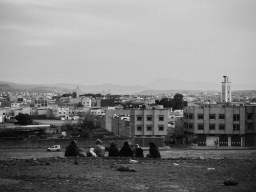

Le cou lui-même était emprisonné dans une fausse peau qui continuait le menton, et cette peau de gant, peinte comme de la chair, attenait au col de la chemise. Il fallut couper tout cela avec de forts ciseaux ; et quand le médecin eut fait, dans ce surprenant assemblage, une entaille allant de l'épaule à la tempe, il entrouvrit cette carapace et y trouva une vieille figure d'homme usée, pâle, maigre et ridée.
Le saisissement fut tel parmi ceux qui avaient apporté ce jeune masque frisé que personne ne rit, que personne ne dit un mot. On regardait, couché sur des chaises de paille, ce triste visage aux yeux fermés, barbouillé de poils blancs, les uns longs, tombant du front sur la face, les autres courts, poussés sur les joues et le menton, et, à côté de cette pauvre tête, ce petit, ce joli masque verni, ce masque frais qui souriait toujours.